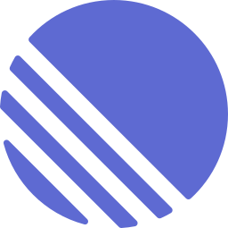

TICKETS

/
Azure Boards
CODE
GitHub
/
Azure Repos
NOTIFY

/
Teams
Aube
Turn your tickets & pull requests into a daily standup. Bring your own stack — pick your tools once, run it every morning.
$ python standup.py Fetching tickets... 6 issues updated in last 24h Fetching PRs... 3 merged, 2 opened Fetching reviews... 2 reviewed Standup — Wednesday 15 Jul ✅ Done yesterday - TSK-101 — Improve onboarding flow (#321 merged) - TSK-87 — Fix data synchronization (#315 merged) 👀 Reviews - #330 — Add search to activity log (@alice's PR) 🔨 Working on today - TSK-102 — Implement analytics tracking - TSK-88 — Enhance reporting export Standup posted to Slack.